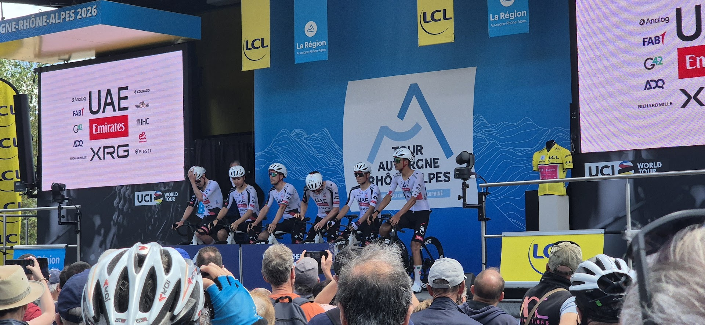
Tour de
France.
Création graphique et présentation d'équipes cyclistes, sous forme de cartes à collectionner.
Une passion, des cartes.
Comme chaque été depuis maintenant plusieurs années, je regarde le Tour de France à la télévision et, quand je peux, je vais sur le tracé du Tour.
Pendant mon temps libre, entre les entraînements et les compétitions de tir à l'arc, le travail et les sorties à vélo, je ne savais pas vraiment comment m'occuper pendant ces vacances. J'ai donc essayé de refaire quelques cartes de coureurs en m'inspirant de ce que fait Panini, mais à ma façon. Les cartes sont inspirées des maillots officiels des équipes.
Pour les concevoir, j'ai utilisé des images du site officiel du Tour de France comme base visuelle, ainsi qu'Adobe Illustrator et Adobe Photoshop pour la création.
Les coureurs du peloton.


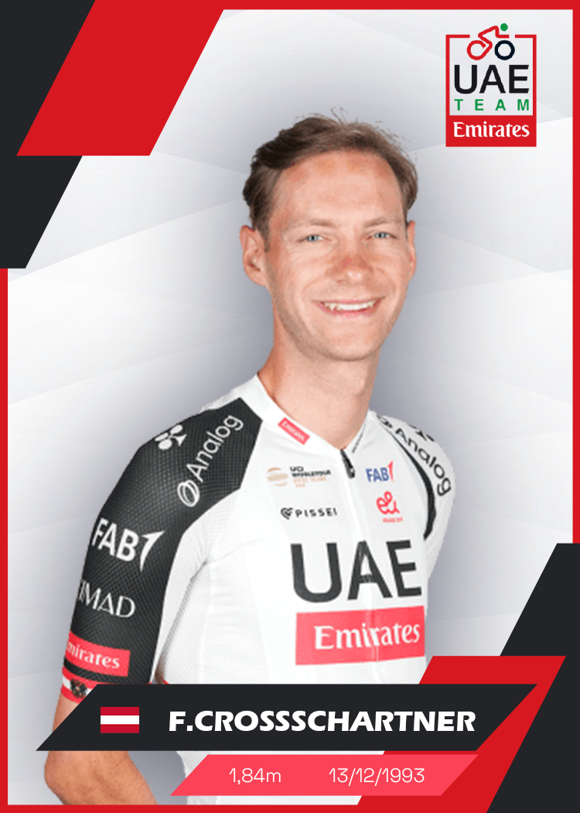
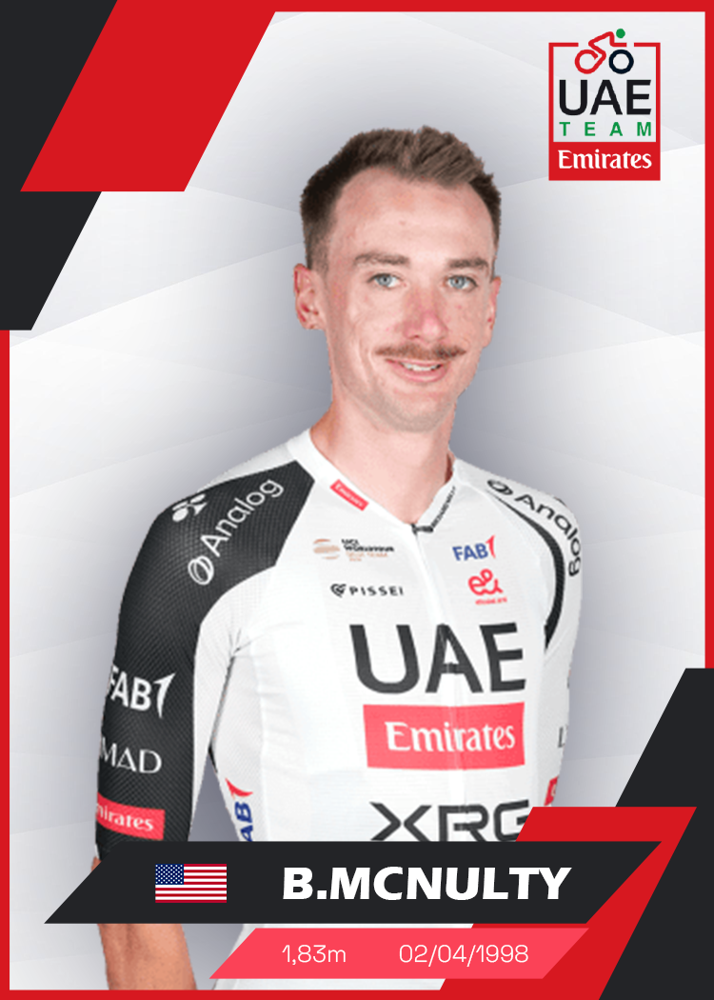
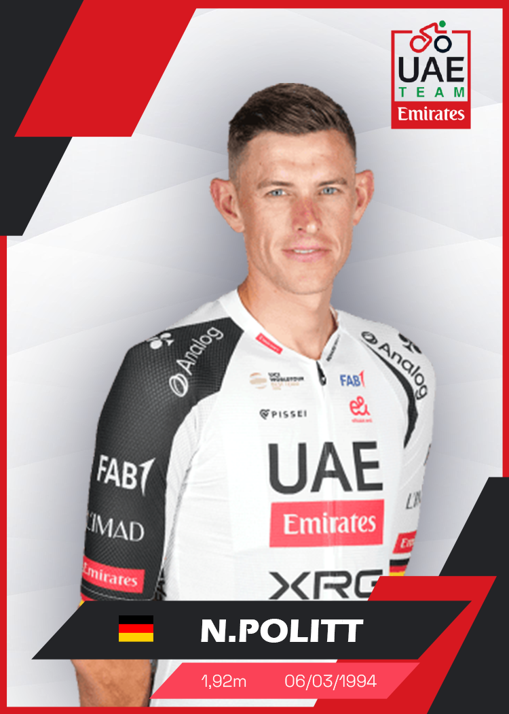
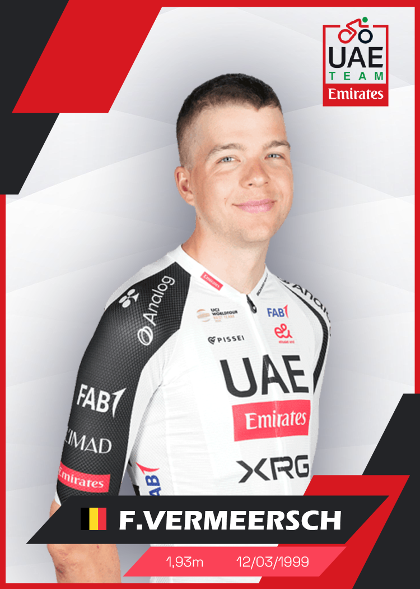
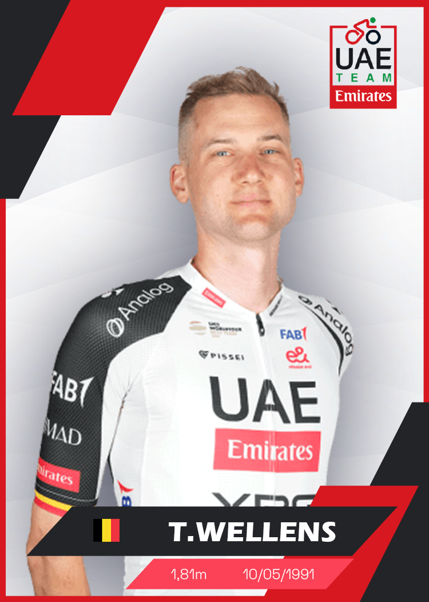
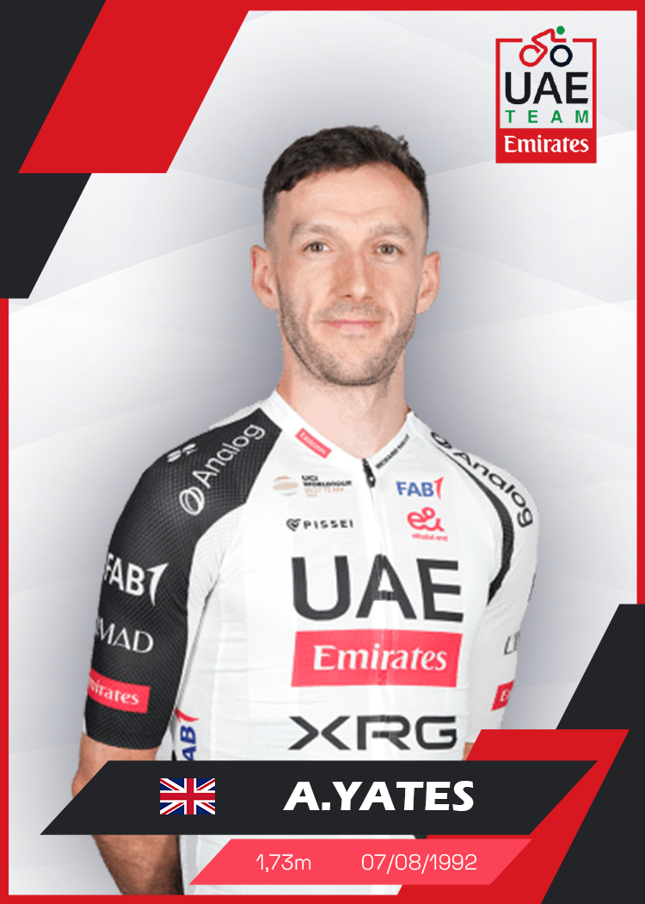
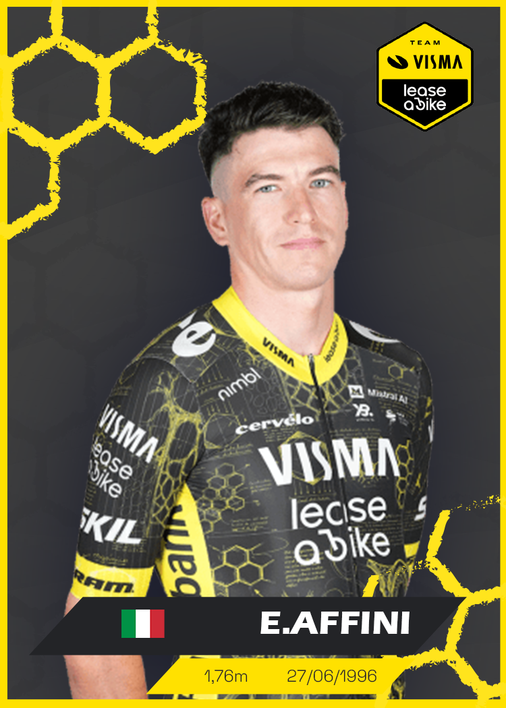
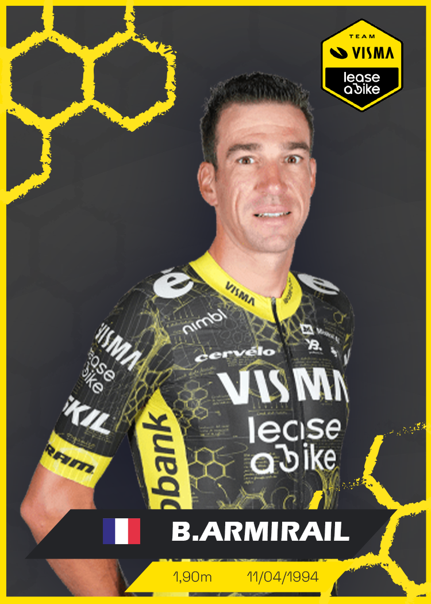
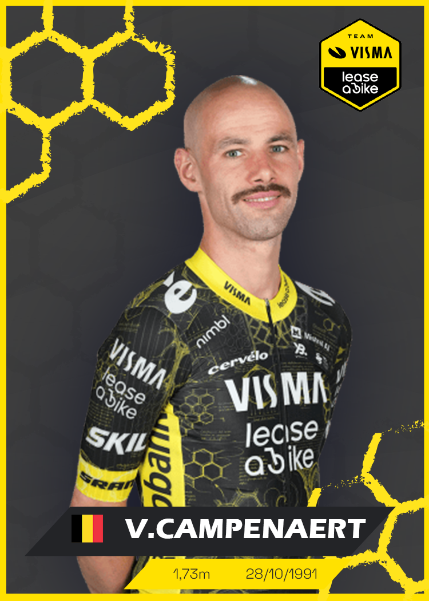

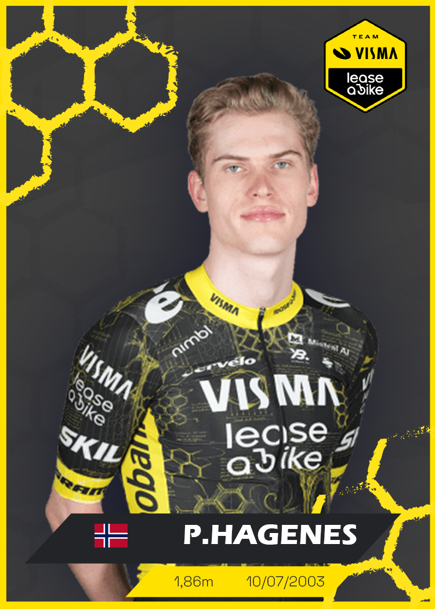
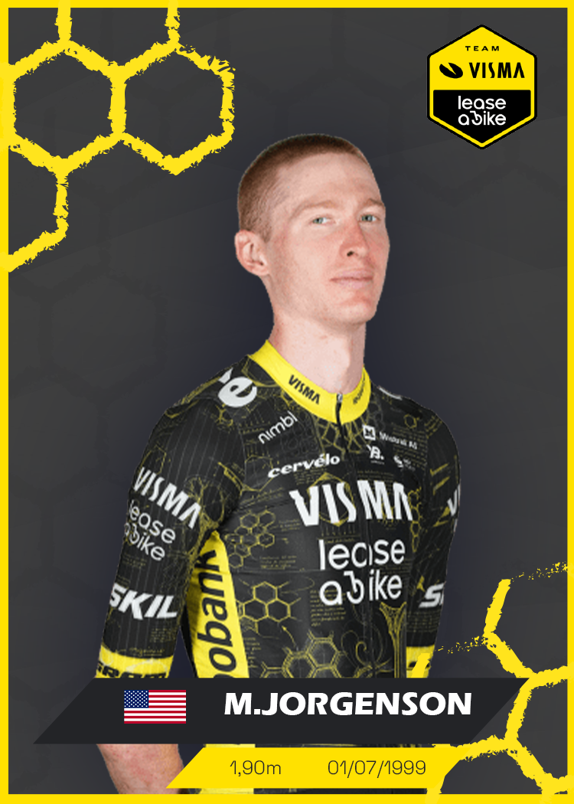
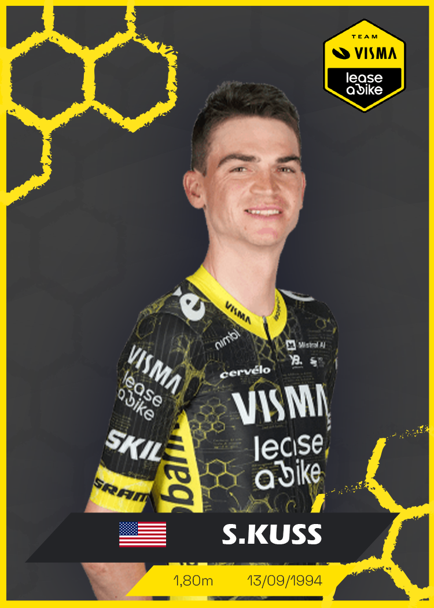
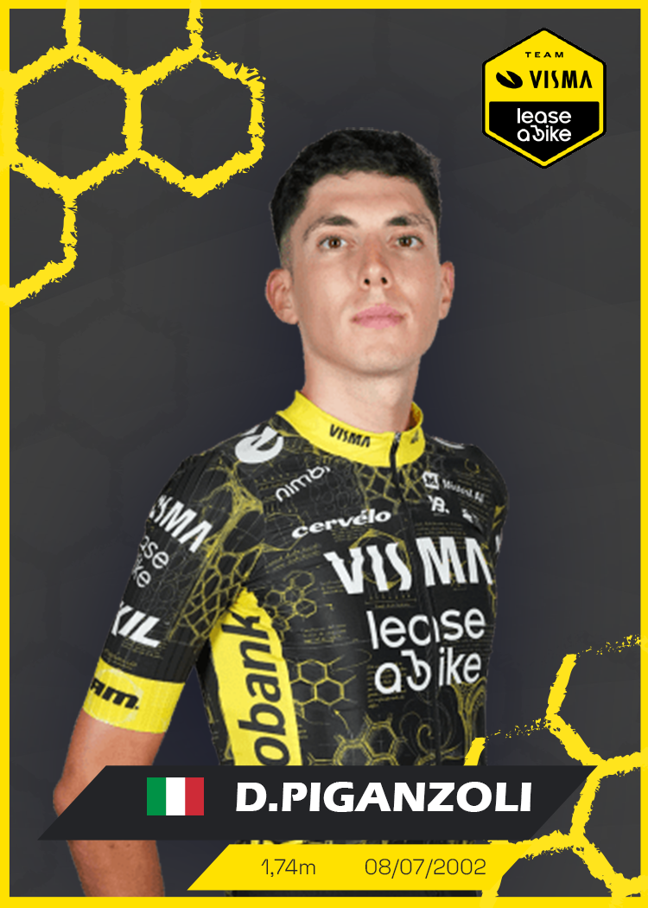